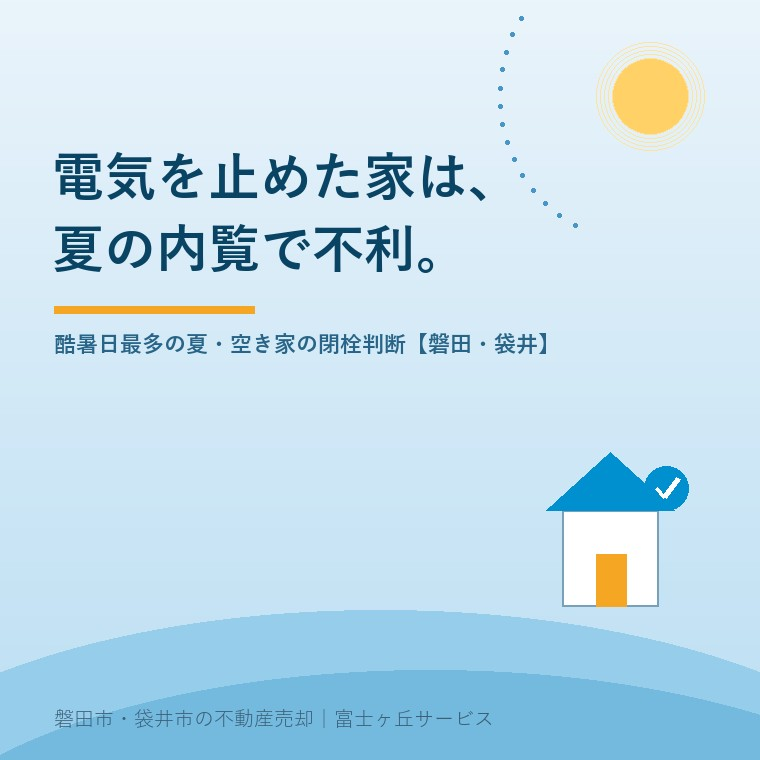

2026年8月16日｜カテゴリ：売却実務／空き家の管理

この記事の要点
Q. 親が施設に入って実家が空きました。もったいないので電気も水道も止めたのですが、不動産屋さんに「内覧のときに困ります」と言われました。売れるまで払い続けるべきなんでしょうか。
A. 結論から言えば、売り出す予定があるなら、電気は残してください。水道も、できれば残したほうがいい。理由は季節です。気象庁は令和8年4月17日に、最高気温40℃以上の日の名称を「酷暑日」と決定しました。そしてこの夏、その酷暑日の延べ地点数は8月3日時点で34地点となり、比較可能な2010年以降で最も多くなっています。東海地方では国内初となる5日連続（7月21〜25日）の酷暑日も出ました。この気温のなか、エアコンの動かない家に、他人を30分立たせるのが夏の内覧です。買主は間取りではなく暑さを持ち帰ります。判断の順番は、①売り出す時期が決まっているか ②内覧の見込みがあるか ③水道は通水と設備確認のために要るかの3つ。基本料金の月額と、内覧が一件流れる損失を並べれば、答えはたいてい決まります。磐田市・袋井市では、介護施設の運営から不動産事業を始めた富士ヶ丘サービスのような「介護×不動産」専門の会社に相談するという選択肢があります。
お盆が明けました。ご実家に泊まられた方も、日帰りで様子を見に行かれた方もいらっしゃると思います。
そして、帰り際にこう考える。「誰も住んでいないのに、電気代と水道代を払い続けるのはもったいない」。
まったくその通りです。実際、私たちも「止めましょう」とお伝えする場面はあります。ただし、売り出す予定があるなら話が変わります。それも、今年の夏は特に。今日はその理由と、磐田市・袋井市での具体的な手続きを整理します。制度と統計は2026年8月16日時点で気象庁・環境省・両市が公表している内容に沿って書きます。
まず、この夏がどれくらい特別だったかを数字で押さえます。
気象庁は令和8年4月17日、最高気温が40℃以上の日の名称を「酷暑日」に決定したと発表しました。従来、25℃以上が夏日、30℃以上が真夏日、35℃以上が猛暑日と決まっていましたが、40℃以上に呼び名がありませんでした。それが今年から予報用語になったわけです。
そして、名前がついた最初の夏がこれです。気象庁が令和8年8月3日に発表した資料（8月4日追記を含む）には、次のように書かれています。
・7月中旬と下旬の西日本の平均気温は、統計を開始した1946年以降で最も高い記録
・7月末までの猛暑日の延べ地点数は、過去最多だった2025年に次ぐ多さ
・酷暑日の延べ地点数は8月3日時点で34地点となり、2025年（30地点）を上回って比較可能な2010年以降で最多
・東海では、国内初となる5日連続（7月21〜25日）の酷暑日
「東海で国内初の5日連続」。ここです。磐田市も袋井市も東海地方です。
環境省と気象庁は、令和8年度の熱中症特別警戒アラート・熱中症警戒アラートの運用を令和8年4月22日から開始しています。熱中症警戒アラートは、府県予報区等内のいずれかの地点で翌日または当日の日最高暑さ指数（WBGT）が33以上と予測される場合に、前日午後5時および当日午前5時に発表されます。
つまり、この夏の屋内は「がまんすれば済む」レベルではないという前提で、行政も動いています。
ここからが本題です。閉栓した実家に買主を案内すると、こうなります。
| 止めているもの | 内覧で起きること | 買主が持ち帰る印象 |
|---|---|---|
| 電気 | エアコンが動かない。締め切った家は屋外より暑い。照明がつかず、北側の部屋・浴室・納戸・床下点検口が真っ暗になる | 「暑くて頭に入らなかった」「暗い家だった」 |
| 水道 | 蛇口をひねっても出ない。水圧・排水・給湯器の確認ができない。トイレが使えない | 「水まわりが分からないままだった」 |
| 両方 | 滞在時間が10分程度に縮む。質問が出ない。二次内覧につながらない | 「一応見た」で終わる |
いちばん大きいのは、滞在時間です。買主は暑い家に長くいられません。10分で出ていく内覧からは、検討が始まりません。内覧で選ばれる家の記事にも書きましたが、決め手は多くの場合、間取りそのものではなく「その場で何を確認できたか」です。
電気ほど目立ちませんが、水道の閉栓には別の問題があります。通水できないと、家の状態が分からないのです。
これらは、買主が知りたいことであると同時に、売主が先に知っておくべきことでもあります。契約後に判明すると、話が面倒になります。契約不適合責任の記事で書いたとおり、引渡し後に出てくるより、売り出す前に出てくるほうが、はるかに安く済みます。
もう一つ。水を使わない家は、においが変わります。
台所・洗面・浴室の排水口や、トイレの便器の底には、排水トラップという水の溜まる構造があります。この封水が、下水管からの臭気や虫の侵入を防いでいます。ところが長期間水を流さないと、封水が蒸発して切れます。気温が高い夏は、これが早い。
封水が切れた家に入ると、玄関を開けた瞬間に下水のにおいがします。買主が最初に受け取る情報が、においになる。これは価格に響きます。
対策は単純です。月に一度、各所の蛇口を数分ずつ流す。それだけで封水は戻ります。夏の空き家を1か月放置するとどうなるかの記事にも通じますが、水を止めてしまうと、この一手が打てなくなります。
公平に書きます。止めるべき状況もあります。
| 状況 | 判断 | 理由 |
|---|---|---|
| 解体して土地で売ると決めている | 止めてよい | 建物の設備を見せる必要がない。ただし解体業者が仮設で使う場合があるので、業者に確認してから |
| 売り出しがまだ半年以上先 | 止めてよい | 基本料金が積み上がる。売り出し1か月前に再開すればよい |
| 相続の話がまとまっていない | 電気だけ残す | 調査・写真撮影・残置物の確認に照明が要る |
| すでに売り出している／これから出す | 両方残す | 内覧の質が直接効く時期 |
| 近所への漏水が心配 | 水道は元栓を締めて契約は残す | 止水栓を閉めておけば漏水は防げる。必要なときだけ開ける方法があります |
最後の行が、実務ではいちばん使える選択肢です。契約は残したまま、宅内の止水栓（メーターボックス内のバルブ）を閉めておく。内覧の日だけ開ける。これなら漏水の不安と、通水確認の必要性を、両立できます。操作方法は水道の担当課や工事店にご確認ください。
なお、空き家にした時点で火災保険の扱いが変わることがあります。閉栓とセットで確認しておくべき話ですので、空き家の火災保険の記事もあわせてお読みください。
ここが地域の話です。「止める」より「再開する」ほうに時間がかかります。売り出しの直前に慌てないよう、日数を押さえておいてください。
| 磐田市 | 袋井市 | |
|---|---|---|
| 担当 | 磐田市上下水道料金センター（磐田市福田400・福田支所2階） 電話 0538-58-3070 | 袋井市 水道課（市役所3階）／浅羽支所1階 市民サービス課 電話 0538-84-6058 |
| 中止（閉栓） | 使用を中止する3日前までに連絡 | 止めたい日（閉栓日）の前日（営業日）までに届出 |
| 方法 | 窓口・電話・ファクス・インターネット受付 | 窓口・ファクス（0538-84-6072）・電子申請 ※電話での受付は不可 |
| 連絡しないと | 使っていなくても基本料金がかかります | 同様に届出が必要です |
磐田市は「中止の連絡がない場合、ご使用になっていなくても基本料金がかかります」と明記しています。止めると決めたなら、必ず連絡してください。逆に言えば、残すという判断は「基本料金を払い続ける」という判断です。
袋井市は使用開始（開栓）のほうが厳しく、開栓日が平日なら前営業日までに、早朝から水が必要な場合は2営業日前までに、開栓日が土日祝や年末年始（12月29日〜1月3日）にかかる場合は2営業日前までに届け出る必要があります。「明日、内覧が入りました」では間に合いません。
電気については、中部電力ミライズが使用開始・停止の手続きをウェブと電話で受け付けており、「電気の場合、原則、お立会いは不要です」と案内しています。手続き自体は水道より軽い。だからこそ、電気を止める理由はほとんどありません。再開が容易なぶん、残しておいたときの得も大きいのです。
※各種の受付時間・所要日数・取扱いは変わることがあります。最新の内容は必ず磐田市上下水道料金センター、袋井市水道課、中部電力ミライズへご確認ください。
この地域の実家は、南北に長い敷地に、平屋または2階建てが建っている形が多い。北側に台所と浴室、南側に和室が並ぶ。夏の日中、締め切った南側の和室は、外より確実に暑くなります。
加えて、磐田市・袋井市の買主には浜松・掛川方面からの土日の内覧が多い。往復の運転のあと、日差しの下を歩いて、暑い家に入る。この順番だと、家の印象は気温で決まってしまいます。
私たちがお願いしているのは、内覧の30分前に現地に入って、エアコンを入れ、窓を開けて空気を通し、照明をつけておくことです。それだけで、滞在時間が変わります。電気が来ていれば、できること。来ていなければ、どうにもならないことです。
販売図面をどう見られるかについてはマイソクを売主が読む記事に書きました。図面で興味を持ってもらい、内覧で決めてもらう。その最後の30分を、基本料金の節約で台無しにしないでほしいというのが、今日いちばん伝えたいことです。
当社は、磐田市見付で介護施設を運営するところから不動産の仕事を始めました。ご相談の入口は、たいてい「親が施設に入った」です。
施設に入られた直後は、やることが多い。住所変更、保険、年金、そして光熱費。「使わないものは止める」という判断は、その流れの中でごく自然に出てきます。私たちも、そこを否定はしません。
ただ、売却を考えているなら、止める順番と再開の時期は設計できます。介護の相談の段階で「この家は来春に出しますね」と分かっていれば、水道はいったん止めて、2月に再開する、という組み立てができる。介護の話と不動産の話を同じ人間が聞いているから、この設計ができます。
私たちが目指しているのは「高く売る」だけではなく、「家族が困らない売却」です。価格の前に事実を整理する道具として、ふじがおか実家カルテを用意しています。
基本料金の節約は、正しい判断です。ただし、内覧が一件流れたときの損失は、その何十か月分にもなります。
止めるか残すかは、売り出しの時期が決まれば自動的に決まります。まずは「いつ出すか」を決めましょう。そこからなら、順番をお示しできます。
ふじがおか実家カルテ｜空き家の光熱費・管理の判断もご相談ください
止めるか残すかは、売る時期で決まります。
住所をもとに、売り出しに適した時期、閉栓・再開のタイミング、内覧までに直すべき点、名義と境界の状況を整理し、次に何をすべきかを1枚にしてお出しします。作成料0円・入力約1分。申込みだけで売却依頼にはなりません。
本記事は2026年8月16日時点で気象庁・環境省・磐田市・袋井市・中部電力ミライズが公表している情報に基づく一般的な解説であり、個別の物件について閉栓の是非や売却価格への影響を保証するものではありません。水道の使用開始・中止の受付期限、必要書類、止水栓の操作方法は各市の取扱いにより異なり、変更されることがあります。手続きの詳細は磐田市上下水道料金センター（0538-58-3070）、袋井市水道課（0538-84-6058）へ、電気の手続きは中部電力ミライズへ、それぞれ最新の内容をご確認ください。空き家にした場合の火災保険の適用は保険会社・契約内容により異なりますので、必ず契約先の保険会社へご確認ください。給排水設備の不具合や漏水の判断は水道工事店へ、契約不適合責任に関するご相談は弁護士へ、相続登記は司法書士へ、税務は税理士へご確認ください。個別のご相談は当社までどうぞ。
磐田市・袋井市の実家じまい・相続空き家相談
固定資産税通知書だけでも相談できます
住所があいまいでも、通知書や写真から名義・道路・農地・残置物の確認順を整理します。カルテ申込またはLINEで状況を送ってください。
富士ヶ丘サービス株式会社／静岡県磐田市見付5789番地1／TEL:0538-31-3308／静岡県知事 (2) 第14083号／代表取締役・宅地建物取引士 大石 浩之